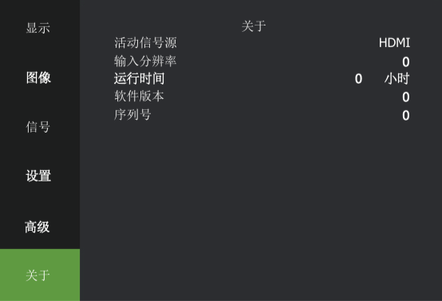
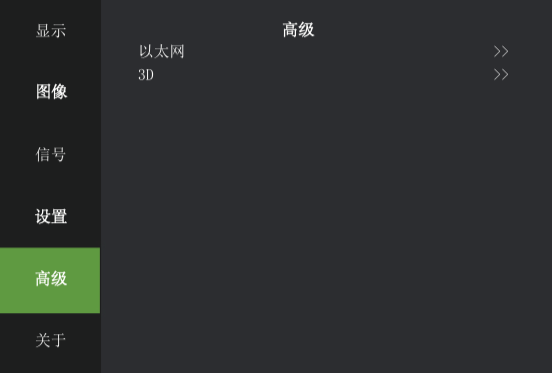
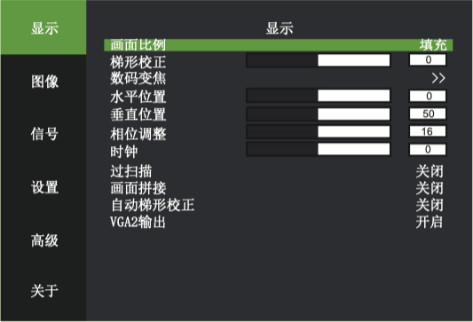
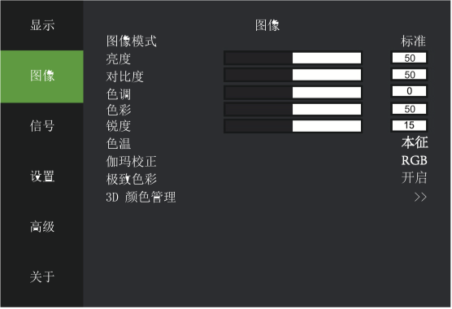
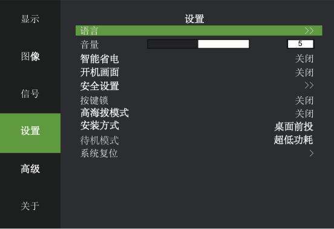

下图为系统一级菜单，分显示、图像、信号、设置、高级、关于 6 大类。
光标可在此 6 项间移动，且支持子菜单自动预览功能。

活动信号源:当有外部信号输入时，显示当前信号通道;无信号输入时，显示空白屏。
输入分辨率:识别外部信号分辨率。
运行时间:光源正常点亮的时间累积。
软件版本:显示当前软件的版本号。
序列号:识别机器的序号。


画面比例填充指依据 DMD 显示 panel 的分辨率显示，本征指信号源的长宽比。
梯形校正为手动梯形校正，并非自动梯形校正。
数码变焦:显示图像的局部放大。
垂直位置:取决于输入信号，其值不确定，但是效果均是微调图像显示位置。
相位调整:当输入信号出现画面抖动时，调节该值找到合适的状态。
过扫描:针对视频信号做重显率的设置。
画面拼接:选择当前机器在拼接模块中方位(左上、右上、左下、右下)。
自动梯形校正:根据机器摆放画面位置自动进行梯形校正。
VGA2输出:选择 VGA2 信号通道输出。

图像模式跟亮度、对比度、色调、色彩、锐度、色温、伽玛、极致色彩、3D 颜色 管理俱关联。
“>>” 表示进入子菜单(下同)。
3D 颜色管理:可以任意调节单色光的色坐标和亮度，针对高级用户群的应用设置，建议普通用户不用修 改。

当海拔高于 3000 米时，需开启高海拔模式。
智能省电:智能省电开启，系统若持续 5 分钟无输入，且无任何操作，则自动转入节能模式，此时电流为正常模式的 80% 左右，以达到节能目的;若持续 10 分钟无输入，则由节能模式转入光源关闭模式;若 持续 15 分钟无输入，系统将转入待机状态;环境温度高于 35 °C ，系统自动转入节能模式以使投影仪能 在更恶劣的环境下使用。
开机画面指投影机点亮后的 10 秒显示品牌商的 LOGO。
安全设置:允许用户设置投影仪的开机密码，以防止非授权用户使用投影机。密码为 8 位阿拉伯数字， 不支持数字以外的密码输入。如您忘记自己设置的密码请联系客服人员。
按键锁:开启后投影机的按键板将失效，仅能通过遥控器或上位机控制投影仪。
待机模式:软件支持两种待机模式，即普通待机模式和超低功耗待机模式，普通待机模式待机功耗> 1w,超低功耗待机模式待机功耗< 0.5w, 普通待机模式下， LAN 模组仍旧工作，故可网络唤醒;超低功耗待 机模式下 LAN 模组亦被断电，故无法网络唤醒。